Neste guia você vai aprender a modelar um chaveiro personalizado no Tinkercad e preparar o arquivo para impressão na Bambu Lab, desde o primeiro clique até o envio para a impressora.
Vamos utilizar três ferramentas principais durante o processo de criação e impressão do chaveiro.
Plataforma gratuita e online para modelagem 3D. Ideal para iniciantes — sem instalação, roda direto no navegador.
Software oficial da Bambu Lab para preparação e fatiamento de arquivos de impressão. Gratuito para download.
Impressora 3D de alta velocidade com filamento PLA — material fácil de usar, seguro e resistente para chaveiros.
Do login no Tinkercad até o arquivo pronto para a impressora — cada etapa detalhada abaixo.
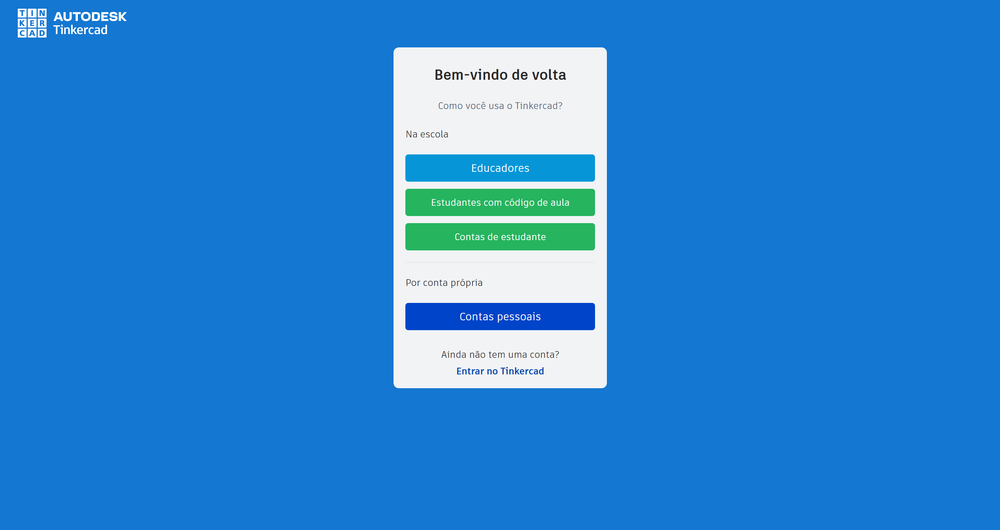
Na tela inicial do Tinkercad, escolha como quer entrar no site. Há três caminhos: Contas pessoais (email e senha), Contas de estudante (vinculadas à escola) ou login rápido com Google.
Se for a primeira vez, clique em "Criar conta pessoal" e siga o cadastro. Para quem já tem conta, escolha "Entrar" e preencha suas credenciais. O login com Google costuma ser o mais rápido — clique no botão, selecione sua conta e pronto.
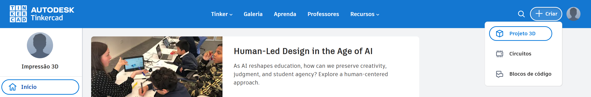
Com o painel principal aberto, localize o botão azul "+ Criar" no canto superior direito. Clique nele — vai abrir um menu com algumas opções.
Escolha "Projeto 3D". O Tinkercad vai carregar a área de trabalho em alguns segundos. O projeto já é salvo automaticamente com um nome aleatório; você pode renomeá-lo clicando no título no topo da tela.
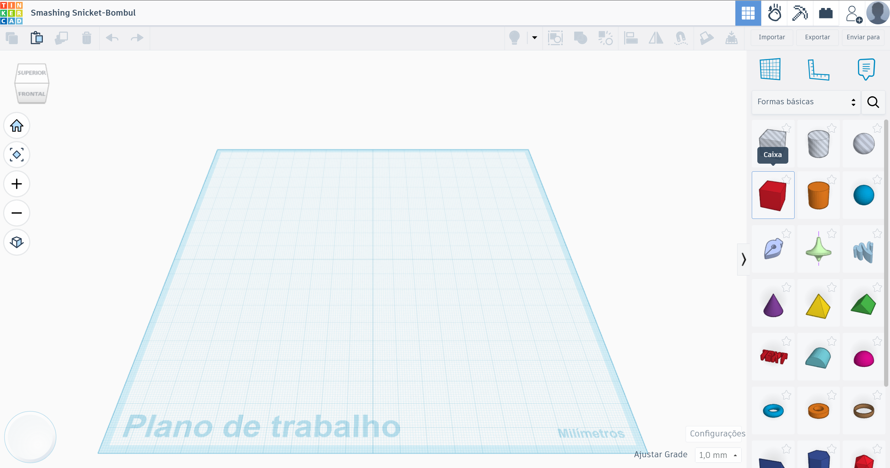
A tela vai mostrar um grande plano azul no centro — essa é a sua "mesa virtual", onde todos os objetos são posicionados. No lado direito fica o painel de Formas básicas, sua caixa de ferramentas com cubos, cilindros, esferas e muito mais.
Antes de começar, aprenda a navegar — é como segurar a peça na mão e girá-la:
🖱️ Zoom: gire a rodinha do mouse para aproximar ou afastar.
🖱️ Girar câmera: clique e segure o botão direito do mouse e arraste.
🖱️ Mover tela: clique e segure a própria rodinha do mouse (como botão) e arraste.
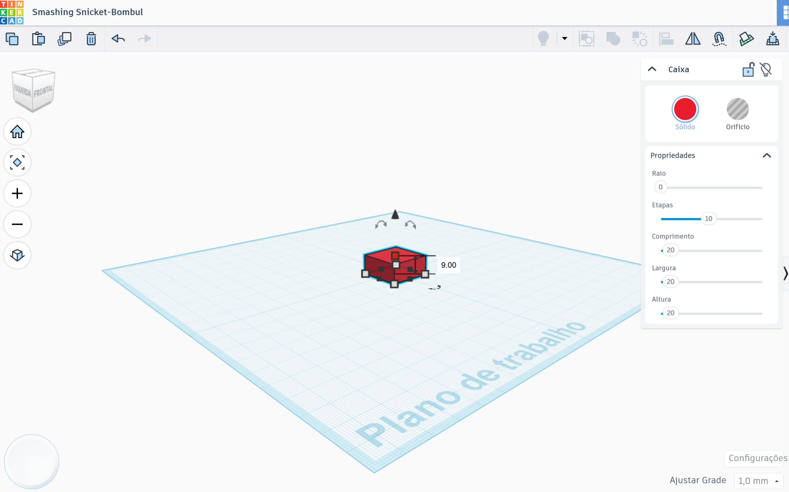
No painel da direita, localize a forma "Caixa" — é um cubo vermelho sólido. Clique nela com o botão esquerdo do mouse, segure e arraste até o centro do plano azul. Solte o botão para posicioná-la.
Essa caixa será a base principal do chaveiro — o retângulo que vai servir de fundo para as letras e sustentar o furo da argola.
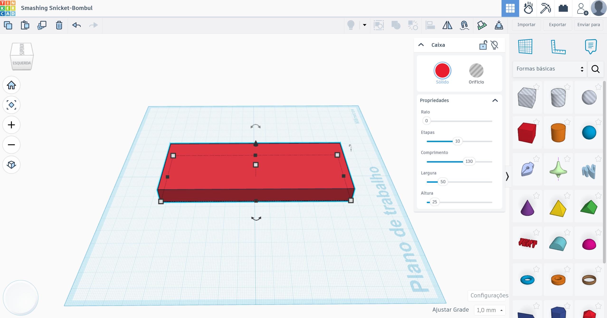
Clique na caixa vermelha para selecioná-la. Vão aparecer quadradinhos brancos e pretos nas arestas e cantos — esses são os manipuladores de escala. Arraste-os ou clique diretamente neles para digitar valores exatos.
Para o nosso chaveiro, use as seguintes medidas: 130 mm de comprimento × 50 mm de largura × 25 mm de altura. Você também pode digitar as dimensões diretamente na janela que aparece ao selecionar o objeto.
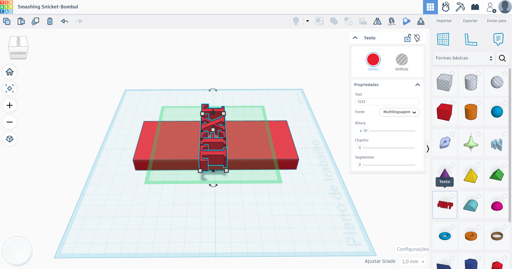
Role o painel de formas para baixo até encontrar a opção "Texto". Clique e arraste-a para cima do retângulo vermelho. Ao soltar, vai aparecer um bloco tridimensional escrito "TEXT" em letras maiúsculas.
Não se preocupe com a posição exata ainda — vamos ajustar nos próximos passos. O importante agora é que o texto esteja em cima (ou próximo) da base.
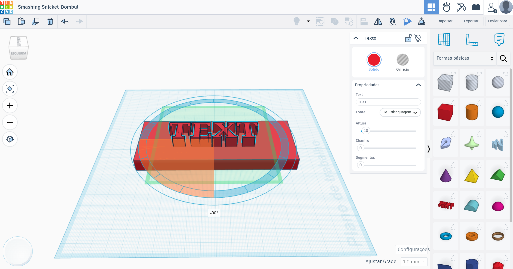
Se o texto estiver virado para o lado errado, clique nele para selecioná-lo. Vão aparecer setas curvas nos cantos superiores — esses são os manipuladores de rotação. Clique em uma delas, segure e arraste para girar a peça.
Gire até o texto ficar paralelo ao comprimento do retângulo. Se quiser precisão, você pode digitar o ângulo exato na janelinha que aparece durante a rotação (por exemplo, 0° para deixar reto).
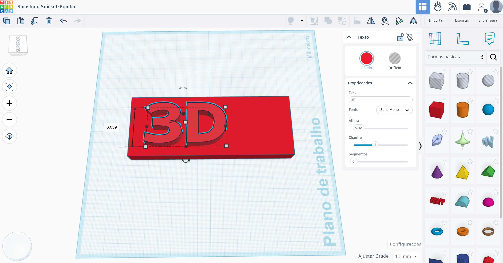
Com o texto selecionado, uma janela de opções abre no canto superior direito da tela. No campo de texto, apague "TEXT" e escreva o que quiser — no nosso exemplo, colocamos "3D". A forma muda em tempo real enquanto você digita.
Abaixo do campo de texto, você pode escolher a Fonte. Experimente diferentes opções — a "Sans Mono" ficou bem bonita para um estilo tecnológico. Depois use os quadradinhos de escala para ajustar o tamanho do texto e posicioná-lo no lado esquerdo da base, deixando espaço vazio à direita para o furo da argola.
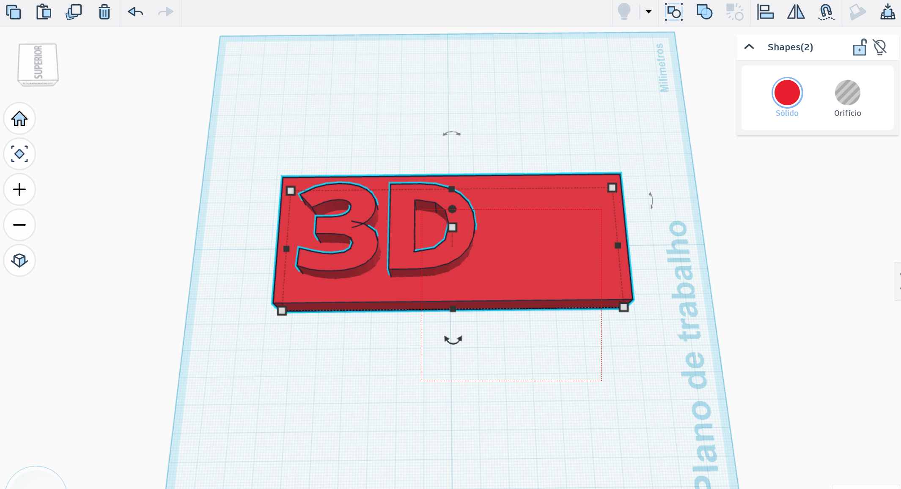
Para selecionar o texto e a base ao mesmo tempo, clique em uma área vazia do plano azul, segure o botão esquerdo do mouse e arraste criando um retângulo que envolva as duas peças. Solte o botão.
A janela da direita deve mostrar "Shapes(2)", confirmando que o programa reconheceu as duas peças. Com múltiplos objetos selecionados, você pode movê-los juntos ou agrupar.
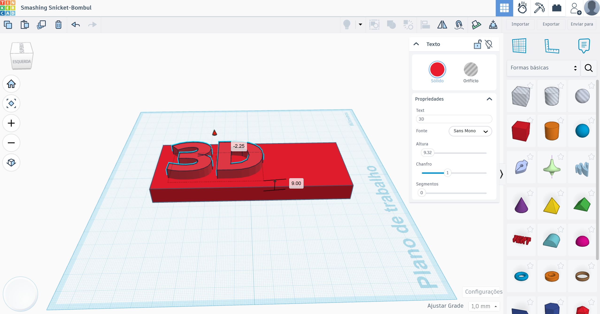
Esse passo é essencial para uma impressão sem erros. Precisamos "afundar" levemente o texto dentro da base para que os dois objetos se unam corretamente ao agrupar.
Clique apenas no texto "3D" para selecioná-lo. Procure a setinha preta em cone que flutua acima do objeto — ela controla a altura. Clique e arraste para baixo, abaixando o texto em aproximadamente –2,25 mm. Assim o texto fica com a base "cravada" no retângulo, criando um relevo firme e bem-definido.
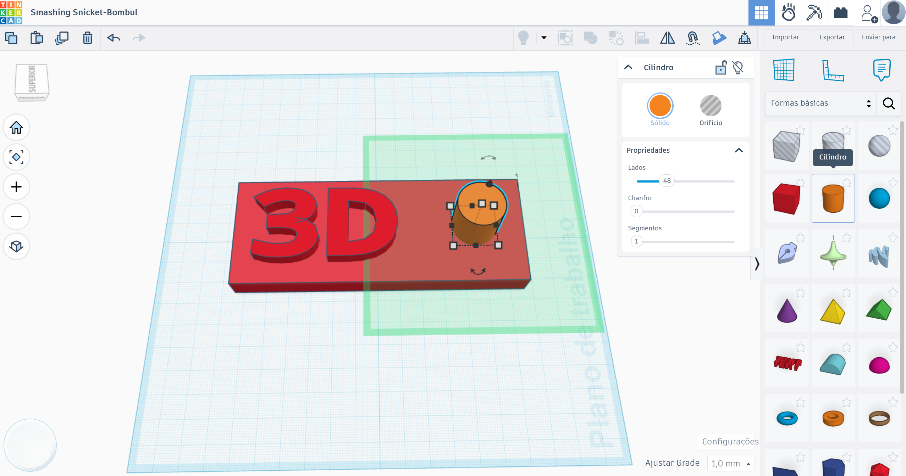
Volte ao painel lateral e arraste um Cilindro para o espaço vazio que deixamos no lado direito da base. Esse cilindro vai funcionar como um "molde" — no próximo passo vamos convertê-lo em um orifício para criar o furo da argola.
Por enquanto, qualquer cor está bem. O que importa é posicioná-lo sobre a área direita do retângulo vermelho, centralizado verticalmente.
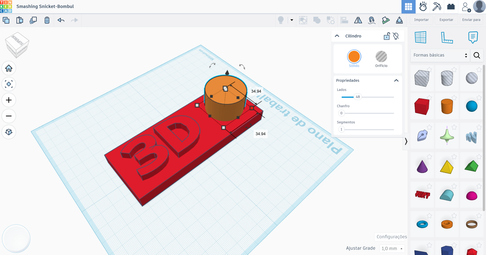
Com o cilindro selecionado, use os quadradinhos de escala para ajustar seu diâmetro. No nosso exemplo, deixamos com cerca de 34,94 mm de largura — grande o suficiente para passar uma corda ou argola, mas sem deixar as bordas muito finas.
Uma boa regra prática: o espaço entre a borda do furo e a borda do chaveiro deve ter pelo menos 4–5 mm para não quebrar facilmente.
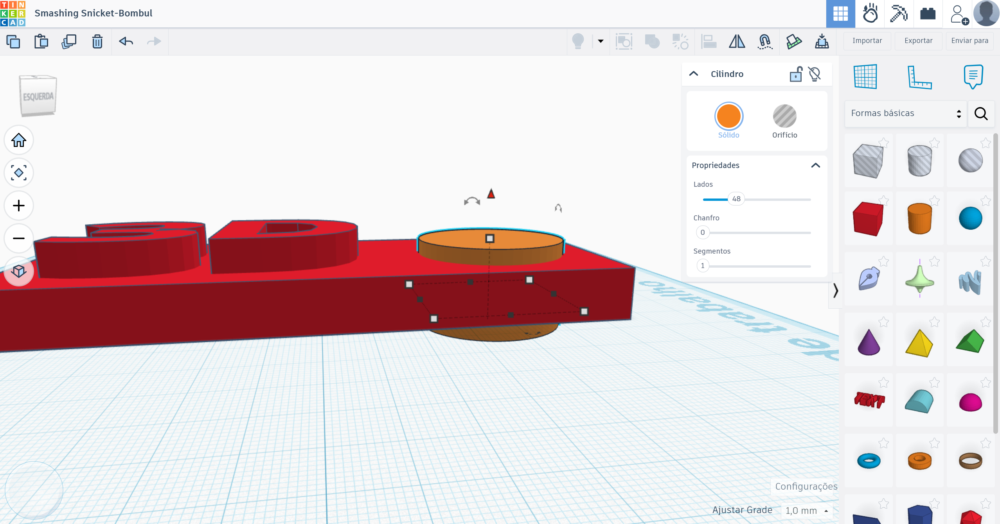
Para o furo funcionar corretamente, o cilindro precisa atravessar completamente a base de cima para baixo. Use a setinha de altura (cone) ou os quadradinhos para aumentar a altura do cilindro até ele ultrapassar tanto o topo quanto o fundo do retângulo.
Visto de lado, o cilindro deve "vazar" acima e abaixo da base vermelha. Isso garante que o corte será limpo dos dois lados na hora do agrupamento.
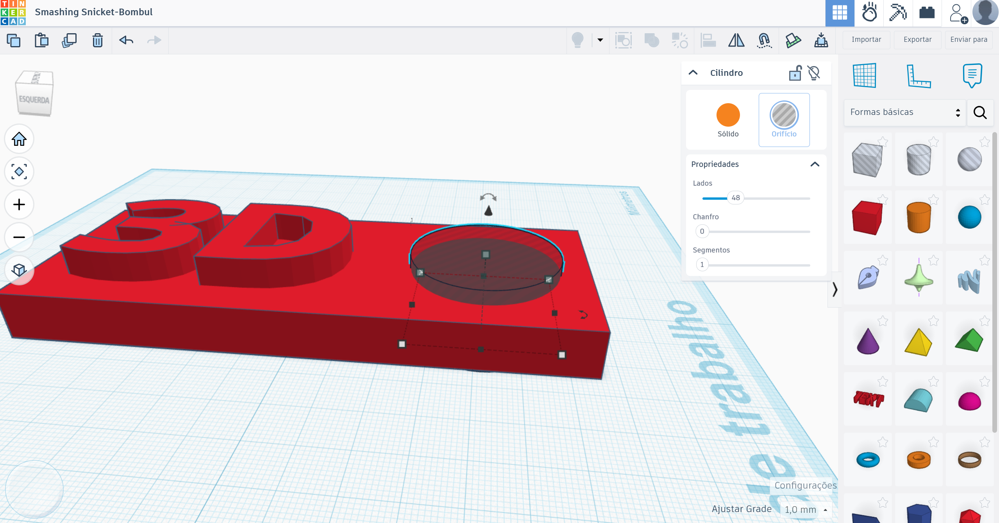
Com o cilindro selecionado, olhe a janelinha no canto superior direito. Você verá dois botões: "Sólido" e "Orifício". Clique em "Orifício".
O cilindro vai mudar de aparência — ficará transparente com listras, indicando que é um "molde negativo". Isso diz ao Tinkercad: "tudo que estiver dentro desse espaço será removido quando agrupar".
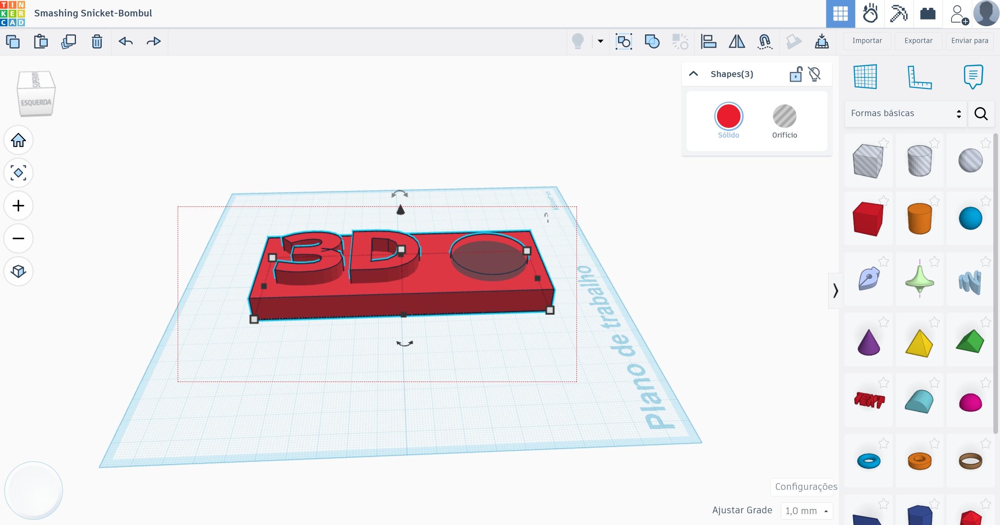
Agora vamos juntar tudo. Clique em uma área vazia do plano e arraste para criar uma seleção que envolva todas as peças: o retângulo vermelho, o texto e o cilindro transparente.
A janela de propriedades deve mostrar "Shapes(3)" — confirmando que as três peças estão selecionadas e prontas para o agrupamento.
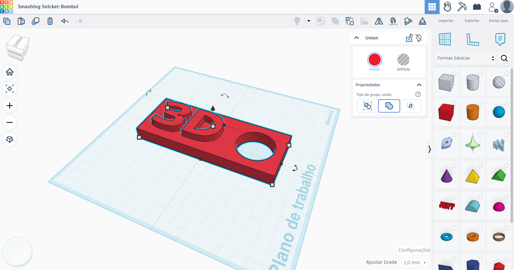
Com tudo selecionado, clique no ícone "Agrupar" na barra superior da tela (parece dois quadradinhos se unindo). É aqui que acontece a mágica:
O texto é fundido com a base criando um relevo em 3D, e o cilindro transparente "corta" um furo limpo através da peça. O resultado é um objeto único, com nome em relevo e furo perfeitinho para a argola.
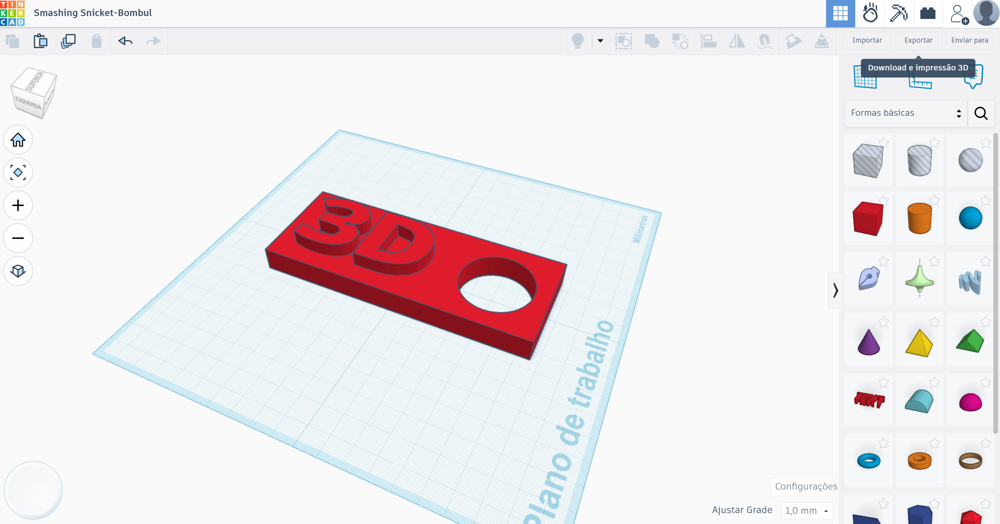
Seu modelo está pronto! Agora precisamos salvá-lo em um formato que a impressora entenda. No canto superior direito da tela, clique no botão "Exportar".
Antes de exportar, certifique-se de que o objeto está selecionado ou deselecionado conforme a opção que você vai escolher na janela: "Tudo no Design" exporta o projeto inteiro.
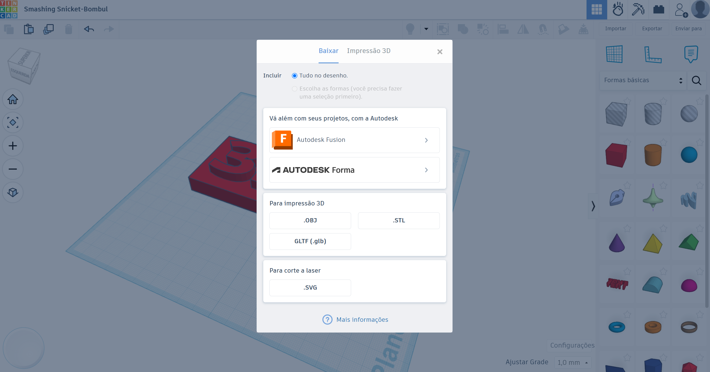
Na janela de exportação, escolha a opção ".STL". Esse é o formato universal para impressão 3D — funciona com praticamente qualquer impressora e slicer do mercado. É como o "PDF" do mundo 3D.
Clique em "Download" e salve o arquivo em algum lugar fácil de encontrar, como a área de trabalho ou a pasta Downloads.
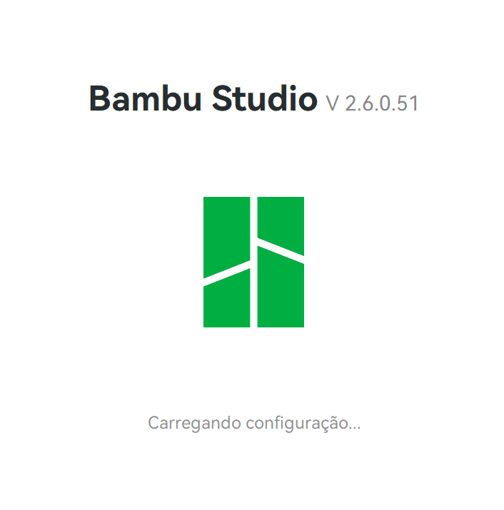
Com o arquivo .STL salvo, abra o Bambu Studio no seu computador. Esse é o software que vai "fatiar" (ou seja, dividir) o seu modelo em centenas de camadas finas e gerar as instruções exatas que a impressora vai seguir para construir o chaveiro de baixo para cima.
Se ainda não tiver instalado, baixe em bambulab.com/download/studio. O processo de instalação é simples como qualquer programa.
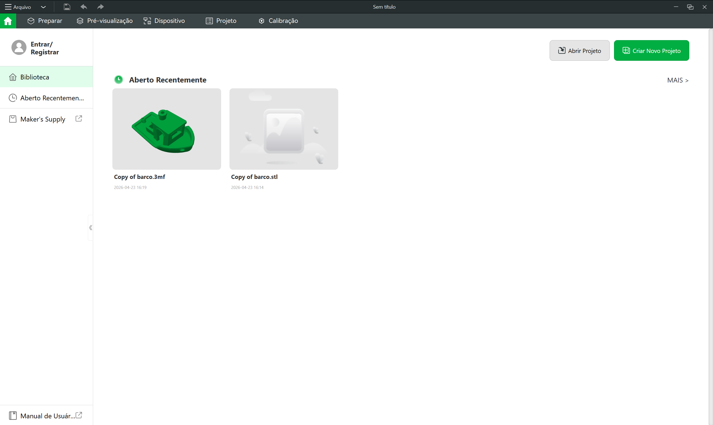
Com o Bambu Studio aberto, clique no botão verde "Criar Novo Projeto". Uma nova janela vai abrir mostrando uma placa quadriculada — essa é a representação virtual da mesa real da impressora.
No painel esquerdo você já pode ver as configurações da máquina, como o modelo da impressora, o tipo de filamento (PLA) e o perfil de qualidade.
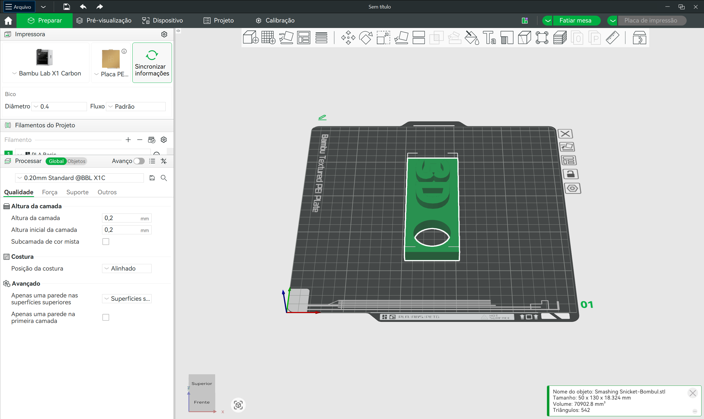
Localize o arquivo .STL que você baixou do Tinkercad e arraste-o para o centro da mesa virtual no Bambu Studio. Ele vai aparecer na mesa — provavelmente bem grande no primeiro momento.
No painel esquerdo, confirme que o filamento está definido como PLA e que o perfil de qualidade está em "0.20 mm Standard" (boa qualidade com tempo razoável de impressão).
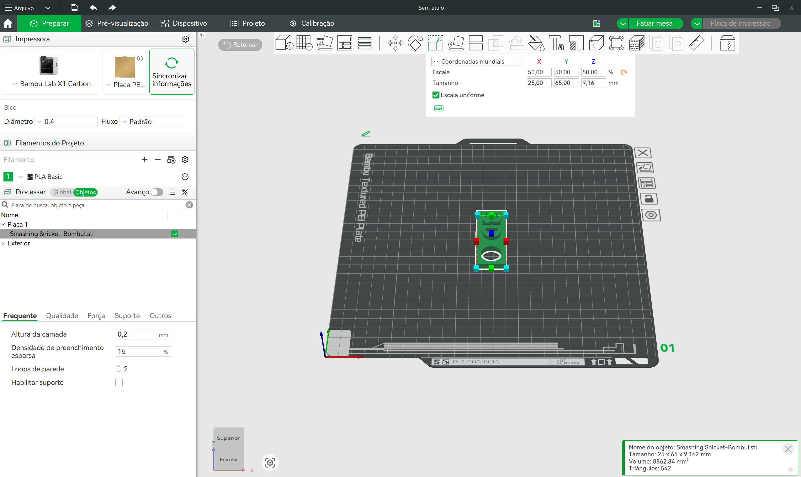
O modelo provavelmente veio grande demais para ser um chaveiro real. Clique na ferramenta de Escala na barra superior. Marque a opção "Escala uniforme" (para não distorcer a peça) e altere qualquer um dos eixos para 50%.
O chaveiro vai encolher automaticamente para um tamanho real — cerca de 6,5 cm de comprimento, perfeito para prender em uma chave.
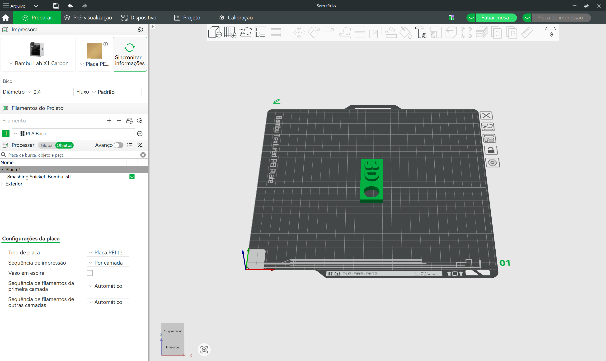
Dê uma volta ao redor do seu chaveiro (usando os mesmos controles de mouse — botão direito para girar, rodinha para zoom) para verificar se está tudo certo: posição centrada na mesa, furo bem formado, letras em relevo visíveis.
Estando tudo certo, clique no botão verde "Fatiar mesa" no canto superior direito. O programa vai calcular todas as camadas e caminhos da impressora.
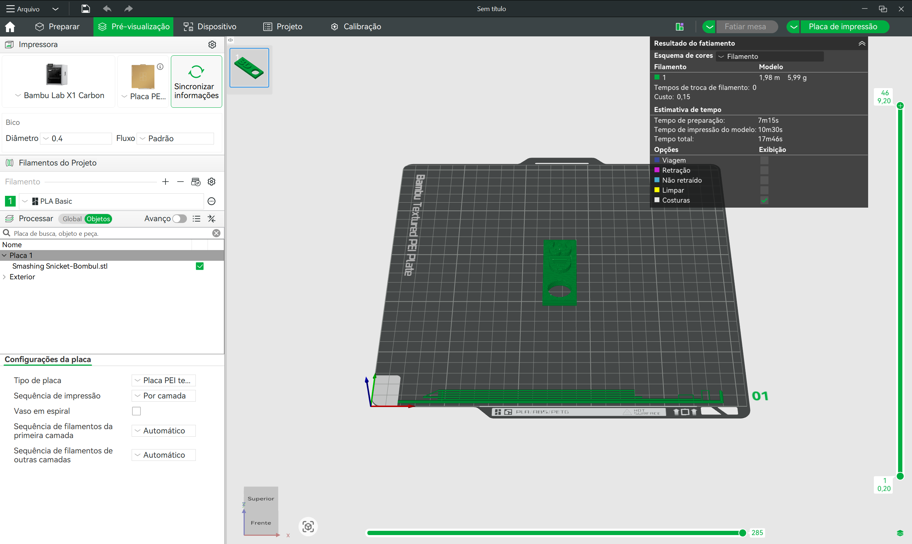
Após o fatiamento, a tela muda para a visualização de camadas. O chaveiro aparece em cores diferentes representando os percursos da impressora. Uma tabela mostra as estimativas:
⏱️ Tempo estimado: ~17 minutos
🧵 Filamento gasto: poucos gramas de PLA
Use as barrinhas laterais para deslizar camada por camada e ver exatamente como a impressora vai construir o chaveiro — de baixo para cima, linha por linha.
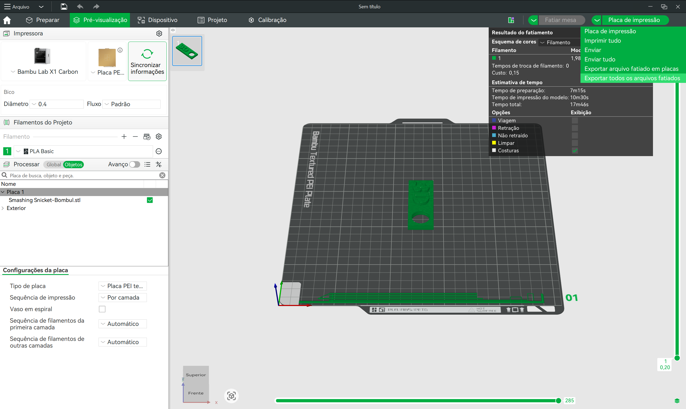
Tudo perfeito? Hora de gerar o arquivo final! No botão verde superior direito, clique na setinha ao lado e escolha a opção "Exportar arquivo fatiado em placas".
O programa vai gerar um arquivo com extensão .3mf ou .gcode — esse é o arquivo de impressão definitivo, contendo todas as instruções para a máquina.
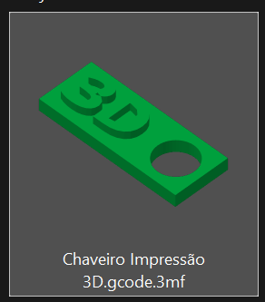
O arquivo está pronto. Transfira-o para a impressora via Wi-Fi, cartão de memória ou cabo USB — e acompanhe o seu chaveiro sendo construído camada por camada na tela da máquina.
Em cerca de 17 minutos, você terá em mãos uma peça real, personalizada e criada do zero por você. Depois da impressão, basta passar uma lixa fina nas bordas se necessário, colocar a argola e usar!